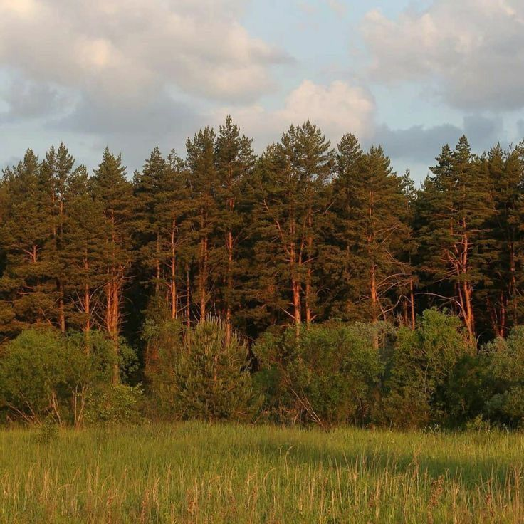

Nature is a source of endless beauty, and flowers are some of its most delicate and colorful creations. Each blossom, from the vibrant tulips to the fragrant roses, carries a story of life and renewal. Flowers brighten gardens, decorate wild landscapes, and attract pollinators with their mesmerizing hues and sweet scents.

Trees stand tall and strong, providing shade, oxygen, and shelter to countless creatures. With their roots anchored deep into the earth and branches stretching toward the sky, trees serve as a bridge between land and air. They play a crucial role in the balance of our environment, absorbing carbon dioxide and releasing life-giving oxygen.

The natural world is a web of interconnected wonders, from tiny insects to majestic mountains. Rivers carve paths through valleys, providing water to nourish the land, while meadows burst with life as animals and plants coexist in harmony. The diversity of nature ensures balance, where every element, no matter how small, plays a vital role in sustaining life.